Variation of average intensity with time (EMG vs GSR) in Audio Mode
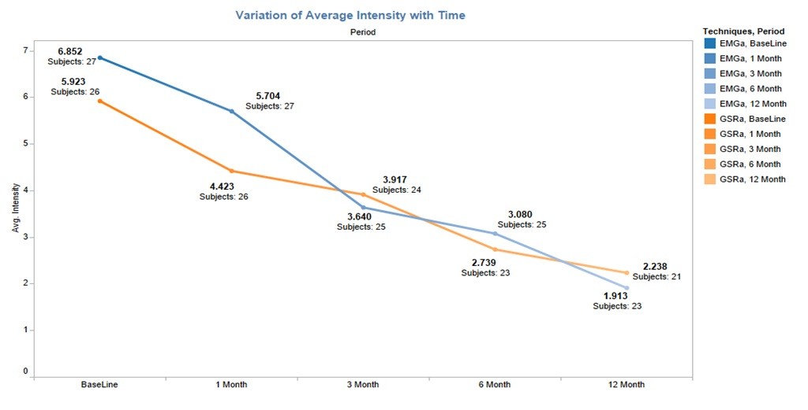
Variation of average duration with time (EMG vs GSR) in Audio Mode
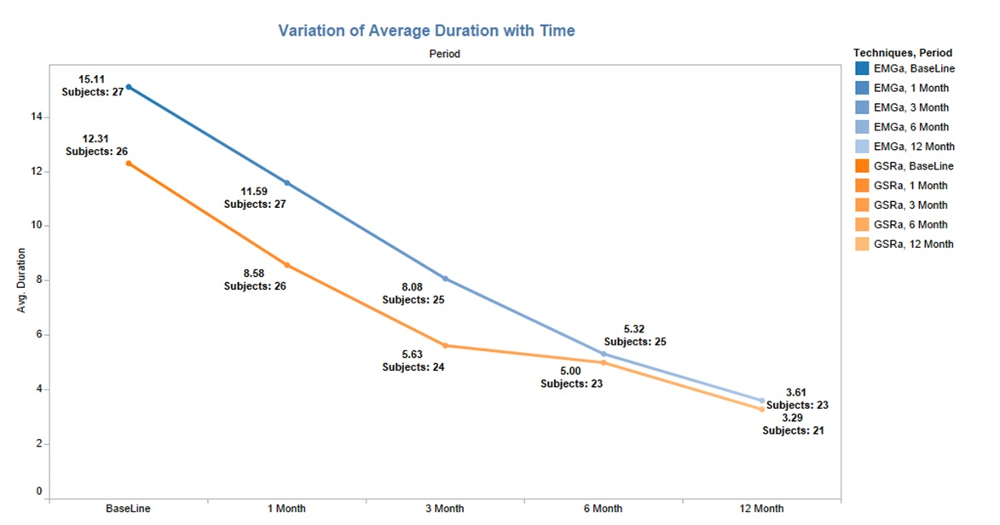
Variation of average frequency with time (EMG vs GSR) in Audio Mode
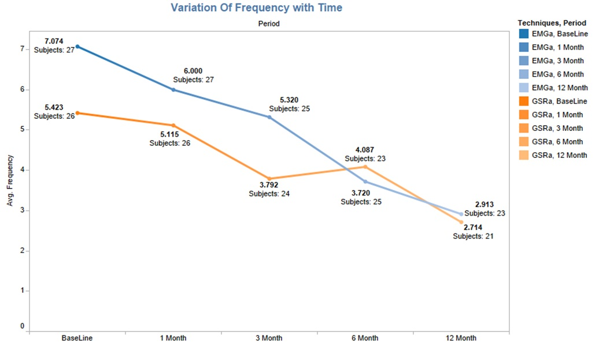
Variation of average intensity with time (EMG vs GSR) in Visual Mode
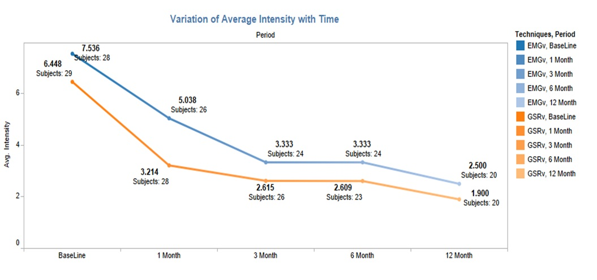
Variation of average duration with time (EMG vs GSR) in Visual Mode
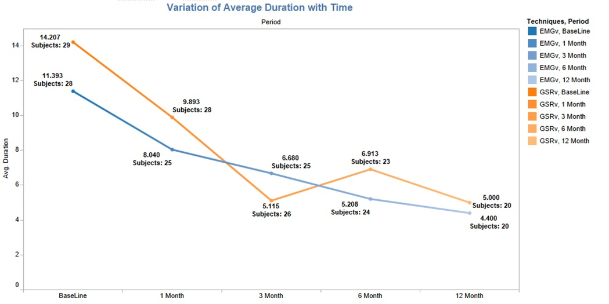
Variation of average frequency with time (EMG vs GSR) in Visual Mode
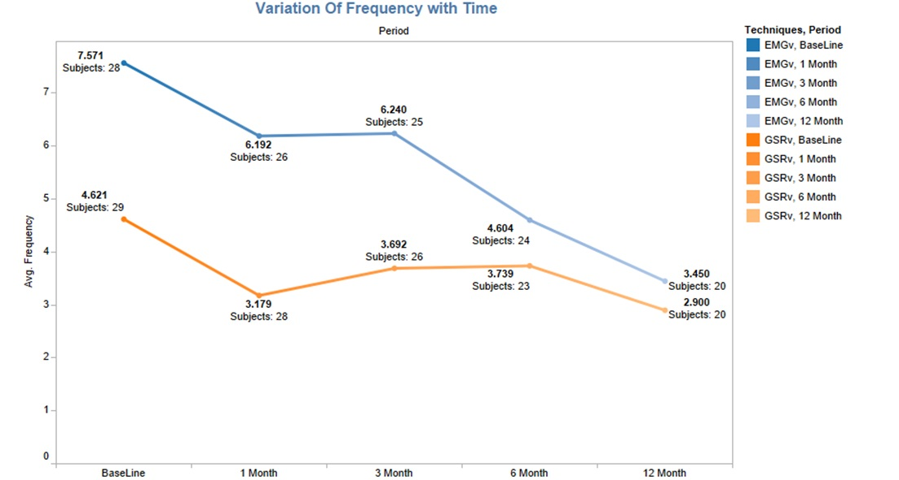
Variation of average intensity with time (EMG vs GSR) in Audio-Visual Mode
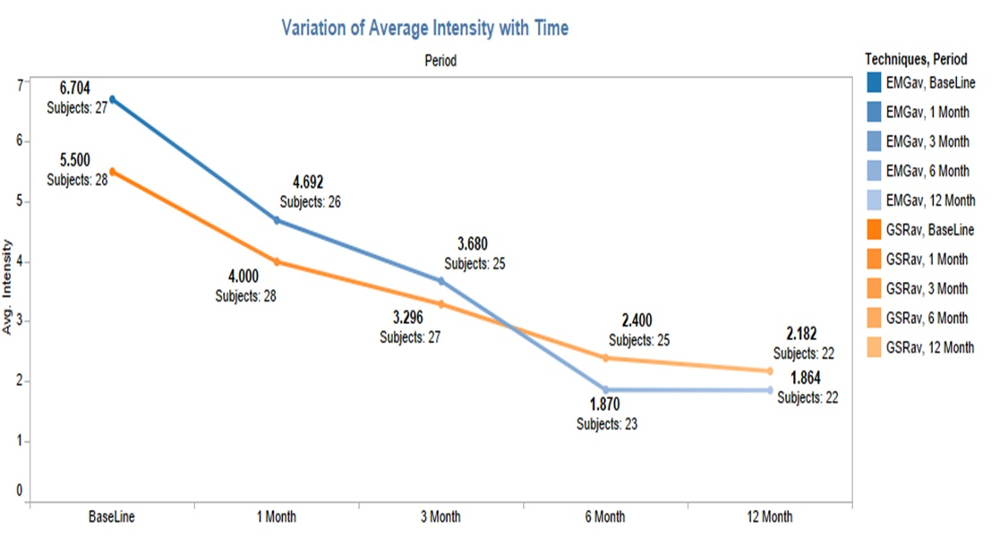
Variation of average duration with time (EMG vs GSR) in Audio-Visual Mode
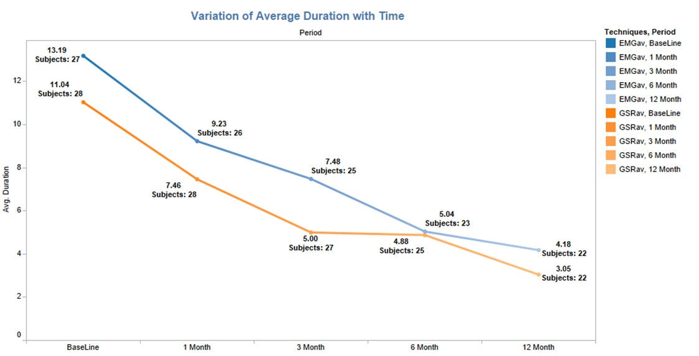
Variation of average frequency with time (EMG vs GSR) in Audio-Visual Mode
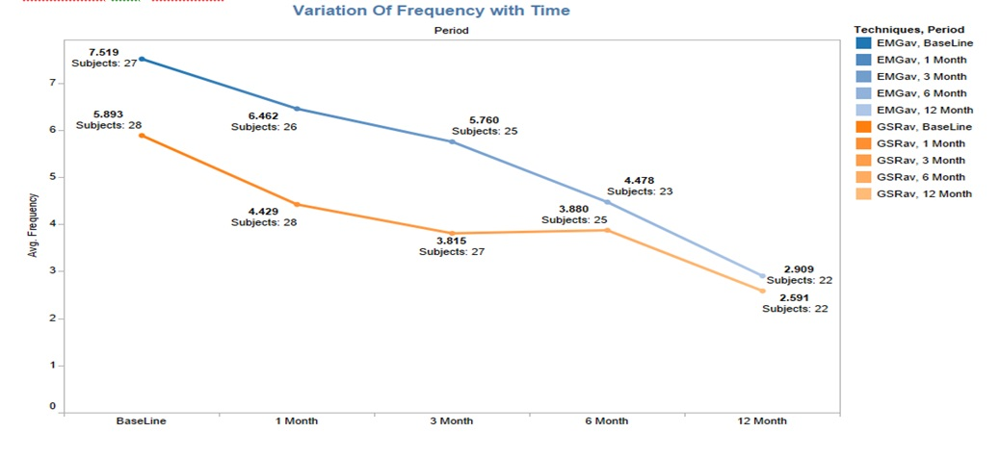
Variation of average intensity with time (EMG vs GSR) in all Modes
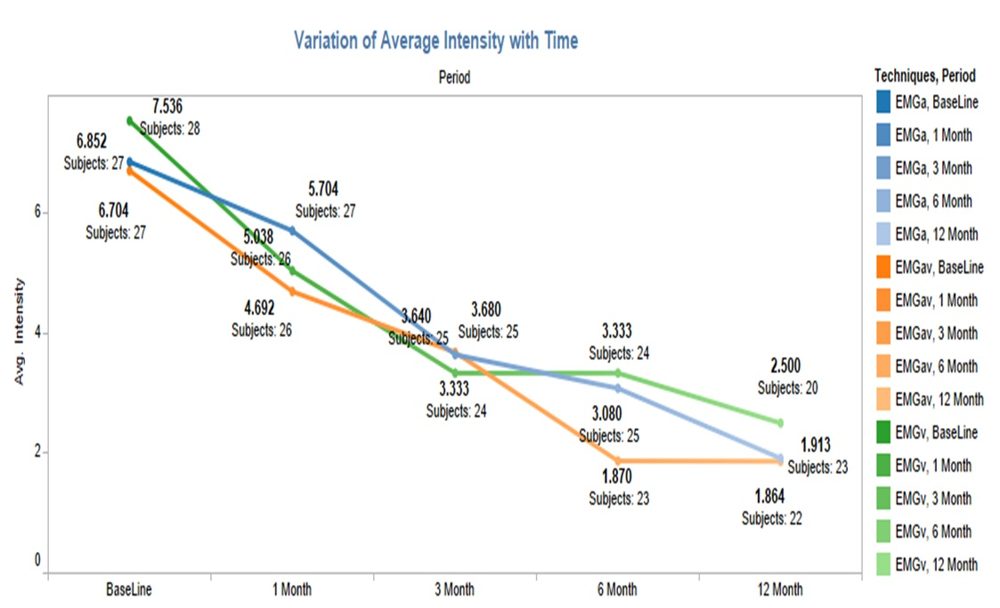
Variation of average duration with time (EMG vs GSR) in all Mode
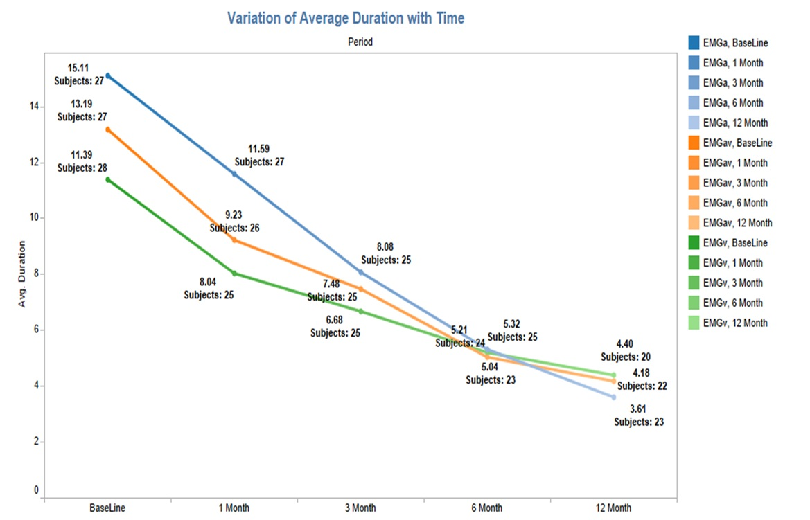
Variation of average frequency with time (EMG vs GSR) in all Mode
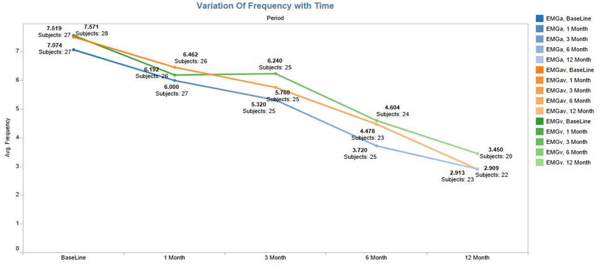